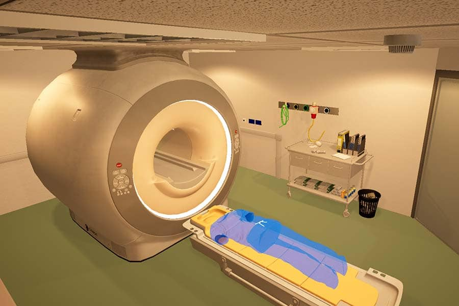

Patient Scanning
The MRI scanning experience aims to alleviate anxiety and claustrophobia in individuals undergoing MRI scans. The simulation room, based on an existing room at Derriford Hospital in Plymouth (UK), provides a realistic environment for users. This simulation allows users to experience entering the MRI scanner, hear the sounds, and simulate the full scanning process, ultimately preparing them for the actual procedure. Additionally, the simulation includes a gamified stillness measurer that monitors head movement. The stillness measurer utilizes a green-to-red light system, where the lights turn red and emit a continuous beep if the user moves their head too much. The goal of the stillness measurer is to encourage users to maintain the correct position during the simulation and, in turn, improve their ability to remain still during an actual MRI scan.
This project went through two iterations. The initial version was developed as a proof of concept in Unreal Engine, with the environment closely modelled on an MRI suite at Plymouth Hospital. The images below compare the real-world space with its virtual recreation.
Following user feedback, we refined the experience and produced the final version, showcased in the images and videos below. I was responsible for designing and building both environments, with the final iteration featuring a brighter, more contemporary, and accessible aesthetic to better accommodate a wider range of users. I also implemented the user interface and developed the interactive functionality demonstrated in the accompanying video.